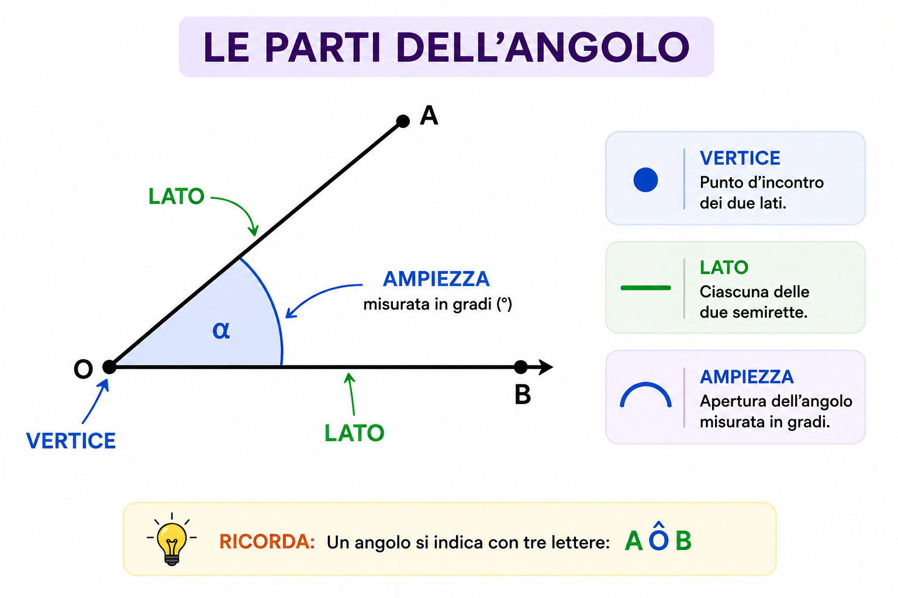

← Torna a Geometria
📐 GEOMETRIA
ANGOLI
Impara cosa sono gli angoli, come si misurano e quali sono i principali tipi di angolo.
📖 Riassunto
Un angolo è la parte di piano compresa
tra due semirette che hanno la stessa origine.
Il punto in comune si chiama
vertice,
mentre le due semirette sono i
lati dell'angolo.
L'ampiezza di un angolo si misura in
gradi (°)
utilizzando il goniometro.
📏 Le parti dell'angolo

- Vertice → punto d'incontro dei due lati.
- Lato → ciascuna delle due semirette.
- Ampiezza → apertura dell'angolo misurata in gradi.
📐 Tipi di angoli
| Tipo |
Misura |
| Angolo nullo |
0° |
| Angolo acuto |
Minore di 90° |
| Angolo retto |
90° |
| Angolo ottuso |
Tra 90° e 180° |
| Angolo piatto |
180° |
| Angolo concavo |
Maggiore di 180° |
| Angolo giro |
360° |
🔄 Angoli particolari
- Consecutivi → hanno lo stesso vertice e un lato in comune.
- Adiacenti → sono consecutivi e gli altri due lati formano una linea retta.
- Opposti al vertice → hanno sempre la stessa ampiezza.
- Complementari → la loro somma è 90°.
- Supplementari → la loro somma è 180°.
- Esplementari → la loro somma è 360°.
⭐ Da ricordare
- ✔ Acuto → meno di 90°
- ✔ Retto → 90°
- ✔ Ottuso → tra 90° e 180°
- ✔ Piatto → 180°
- ✔ Giro → 360°
- ✔ Complementari → 90°
- ✔ Supplementari → 180°
- ✔ Esplementari → 360°